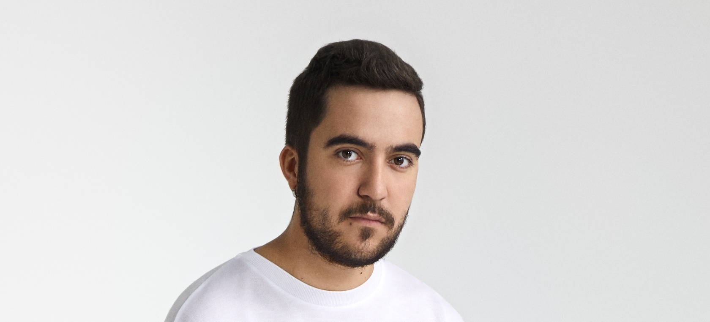
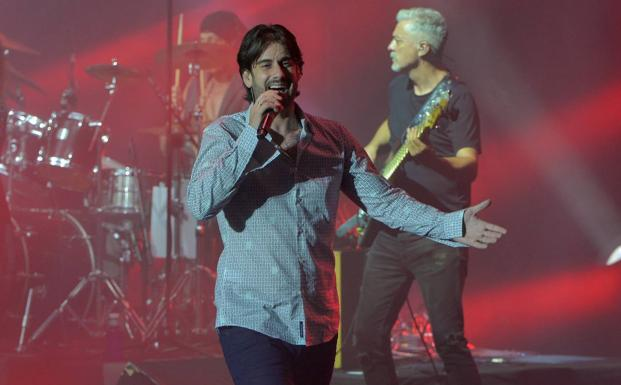
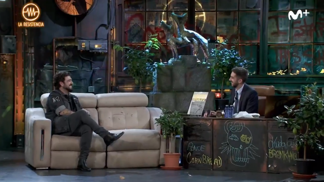

El cantante también trabaja en su próximo álbum
Beret continúa saboreando el éxito de Prisma (el disco opta a un Latin Grammy) un año después de su lanzamiento. Sin embargo, el cantante ya tiene puesto el foco en el que será su siguiente trabajo discográfico. El segundo álbum de estudio llegará antes de lo previsto, aunque antes podremos disfrutar de la especialísima voz del sevillano en algunas colaboraciones que van tomando forma. Entre Prisma y ese nuevo disco, Beret tenía pendiente tres colaboraciones. La primera fue con Lola Índigo, donde el artista volvió un poco a sus orígenes con un tema que bebe del reggae y el urbano y en el que muestra su interés por seguir experimentando con diferentes sonidos. "El tema que he hecho con Lola, cómo te va?, me recuerda a lo que hacía antes", nos contó Beret recientemente en una entrevista para LOS40. Y de cómo te va? a dos géneros que, a priori, poco tienen que ver con su estilo musical. "Estoy haciendo una colaboración de reggaetón y otra de trap", y aclara: "No es el reggaetón duro ni el trap duro". También nos confirmó que ninguna de esas canciones eran suyas y que ambas saldrían antes de diciembre. Estas declaraciones, sin embargo, se produjeron antes de que Aitana anunciase el tracklist de su segundo disco, 11 razones, y confirmase un dueto con Beret que llevará el título de Estupidez. Teniendo en cuenta lo que nos contó todo parece indicar que ese tema será un reggaetón o un trap, aunque también hay que tener en cuenta que eso se saldría de la línea pop de los 2000 que iba a imperar en el nuevo álbum de Aitana. Tendremos que esperar al 11 de diciembre para salir de dudas…
El cantante ovetense ofreció ayer un concierto en Marbella antes de iniciar una gira que le llevará al continente americano
El cantante ovetense Melendi ofreció ayer miércoles en el Festival Starlite Catalana Occidente su único concierto en nuestro país antes de cruzar el charco e iniciar gira el próximo otoño por el continente americano. Tras pisar el escenario con «Tocado y hundido» y «Tú de Elvis y yo de Marilyn», ha reconocido que la noche ha sido «especial» para su equipo y por ello ha dado las gracias a los organizadores de Starlite por «ser valientes y dar este paso», llevando a cabo el evento con tantas medidas de seguridad en prevención contra la Covid-19. En este sentido, el artista asturiano ha dicho que, viendo las últimas cifras, «el virus ha venido para quedarse, así que tenemos que aprender a convivir con él». Con estas palabras daba paso a su clásico «Caminando por la vida». Igualmente, quiso rendir homenaje a las víctimas de la pandemia, «a los que no supimos proteger», ha expresado, con la canción «Marcelino pan y vino», escrita en su día a su abuelo fallecido por cáncer. Con una cuidada puesta en escena de luces y siete músicos en su banda, en la que han llegado a sonar hasta cinco guitarras a la vez, Melendi ha hecho un repaso a sus grandes éxitos para deleite de sus seguidores, desde «Un violinista en tu tejado», «Autofotos» y «Desde que estamos juntos», una de las canciones preferidas del cantante como él mismo ha confesado, hasta «El arrepentido». Una noche que le ha servido de ensayo para la gira que dará comienzo y en la que no han faltado temas como «Déjala que baile», «El amor es un arte» o «Con solo una sonrisa». De su último disco, que salió al mercado pocos meses antes de la pandemia del coronavirus, Melendi ha lamentado con cierta ironía la mala suerte en cuanto a su poca proyección comercial y no haberlo podido compartir «más de cerca» con el público a causa de los acontecimientos vividos y por ello ha interpretado con sentimiento «Sin remitente», «Casi» y «Adiós soledad». Melendi ha querido un concierto íntimo y cercano con el público, por ello ha pedido que la intensidad de las luces se bajasen para poder ver mejor las caras de la gente sentada en platea, «lo necesito, es algo psicológico, él no sentirme aquí solo, poder hablar con ellos y ponerles cara». Incluso ha llegado a bajarse del escenario para cantar «Mírame» paseando entre el público, pidiendo antes a los asistentes que respetasen, como ha sido la tónica general del concierto, las normas de mantenerse en sus asientos con sus mascarillas. Un recorrido por su extenso trabajo como compositor y cantante, que tantos éxitos le han brindado en estos años, y con los que ha hecho disfrutar a un público de todas las edades, que ha coreado letras como «La promesa», «Como una vela», «Cenizas en la eternidad» y «Tu jardín de enanitos». Hasta llegar al momento final, dejando para los bises «Cheque al portamor», «Destino o casualidad» y «Lágrimas desordenadas», un broche perfecto para una noche que le ha servido al artista de reencuentro con sus seguidores y con el propio escenario, porque hay cosas como montar en bici, que nunca se olvidan y Melendi una vez más, ha demostrado su profesionalidad y carisma en directo.
"Cero segundos hemos coincidido en el mismo espacio esa señora y yo de la que no quiero hablar", señaló el presentador. El cantante presentó su nuevo disco, 'Aviónica', y el single 'Entre sobras y sobras me faltas'.
Aunque ya hace unas semanas que Antonio Orozco lanzó su nuevo disco, Aviónica, el cantante acudió a La Resistencia este miércoles para presentárselo a Broncano y todo su equipo. Momentos antes de poner el videoclip del tema Entre sobras y sobras me faltas, que protagoniza junto a Eva González, Orozco le dijo al presentador del programa de Movistar: "Me encantaría verlo porque sale una colega mía". "Seguramente también es amiga tuya, Eva González", añadió el cantante. Broncano, sorprendido, le respondió: "¿La presentadora de La Voz? No la conozco, no he hablado con ella en la vida ni quiero". Entre risas afirmó: "¿Te imaginas que, de pronto, la odio? Que no me la cruce. No la conozco de nada, cero veces, cero segundos hemos coincidido en el mismo espacio esa señora y yo de la que no quiero hablar". Orozco puso cara de circunstancias mientras daban paso al vídeo de la canción. Al terminar, comentó: "Es que no he visto a Eva", a lo que el presentador le respondió que "sí que salía al principio". "Como me gusta tanto verla que como salga poco, me parece que no está", admitió el invitado mientras que el equipo del programa ponía el instante en el que se aparecía la presentadora sevillana. "Aparece justo en ese fotograma porque he pedido yo que no salga más, pero me ha gustado el videoclip", comentó el presentador. Pero Orozco solo le pudo contestar: "¡Qué cabronazo eres!".
©Raquel Gil Santos / Información